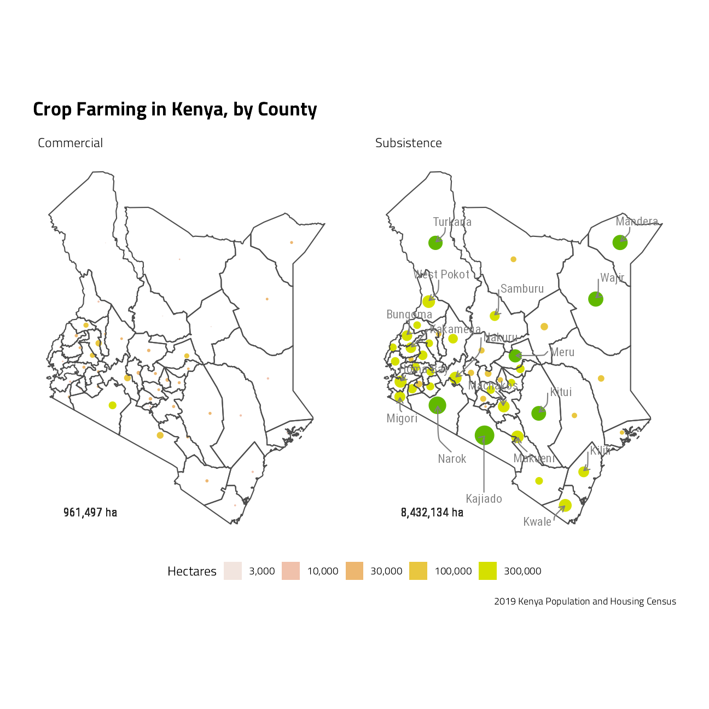
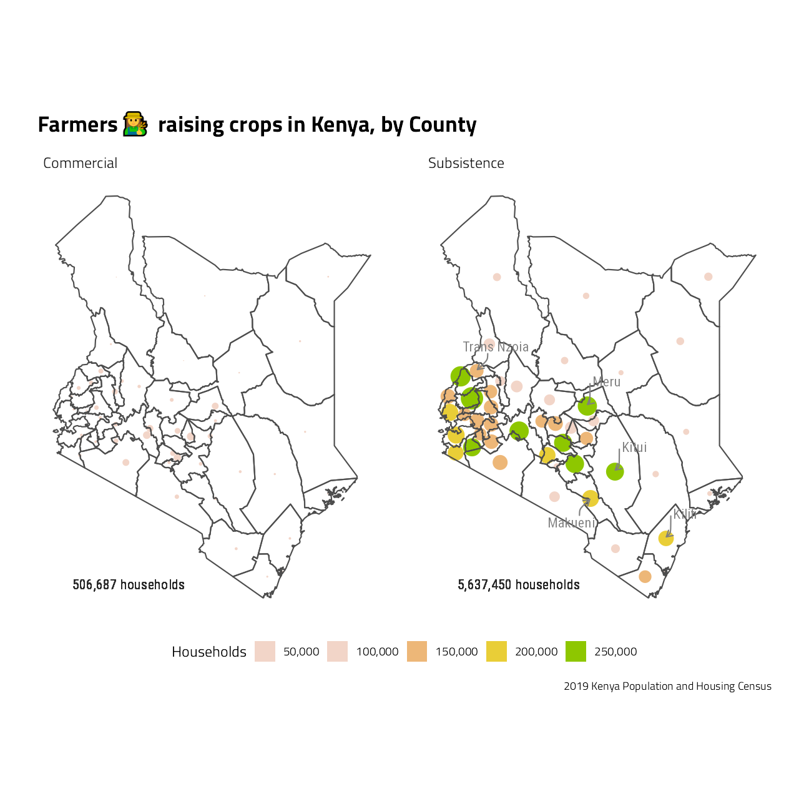
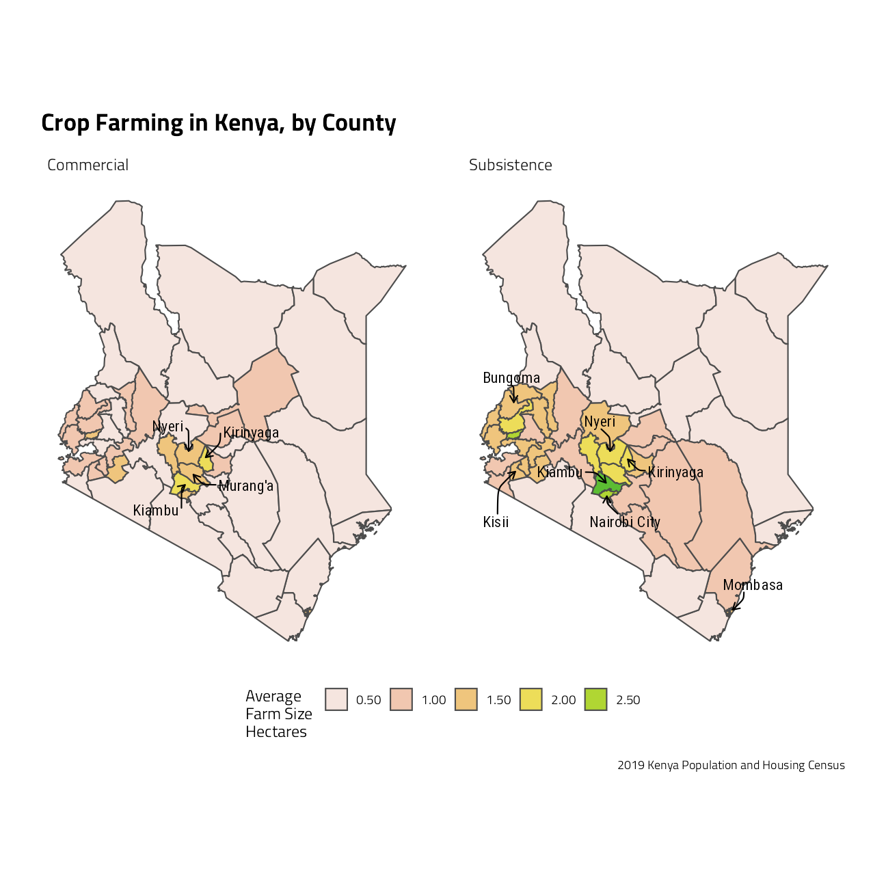
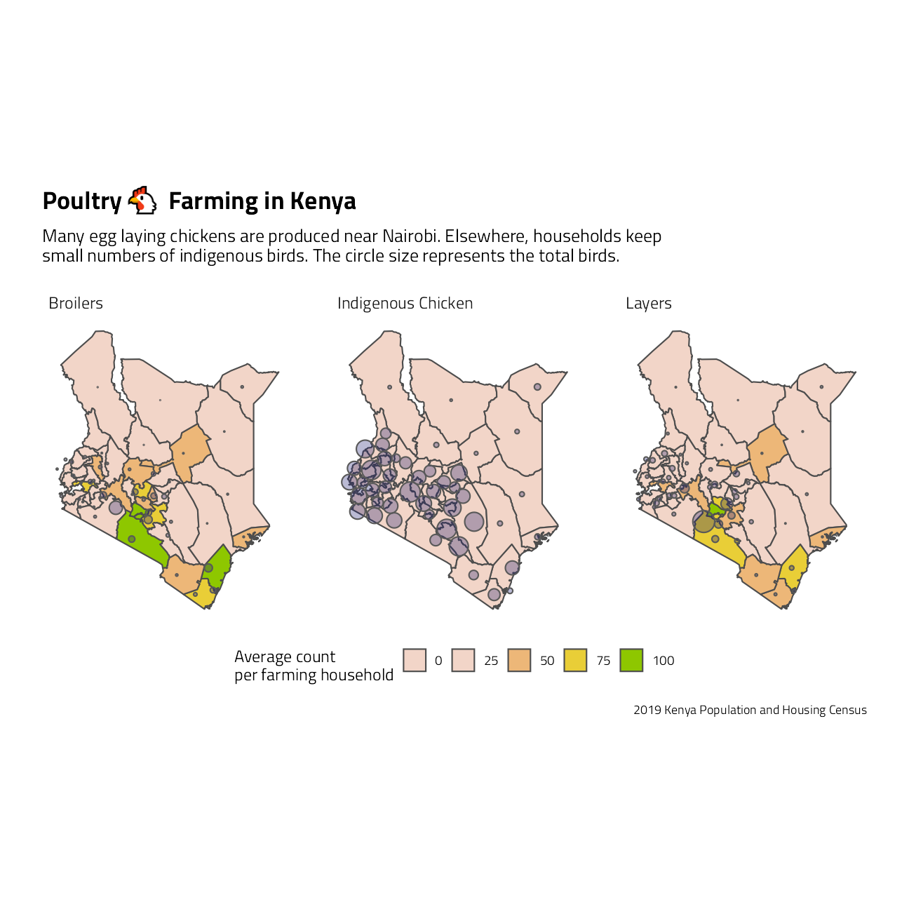

Last updated: 2021-09-24
Checks: 7 0
Knit directory: myTidyTuesday/
This reproducible R Markdown analysis was created with workflowr (version 1.6.2). The Checks tab describes the reproducibility checks that were applied when the results were created. The Past versions tab lists the development history.
Great! Since the R Markdown file has been committed to the Git repository, you know the exact version of the code that produced these results.
Great job! The global environment was empty. Objects defined in the global environment can affect the analysis in your R Markdown file in unknown ways. For reproduciblity it’s best to always run the code in an empty environment.
The command set.seed(20210907) was run prior to running the code in the R Markdown file. Setting a seed ensures that any results that rely on randomness, e.g. subsampling or permutations, are reproducible.
Great job! Recording the operating system, R version, and package versions is critical for reproducibility.
Nice! There were no cached chunks for this analysis, so you can be confident that you successfully produced the results during this run.
Great job! Using relative paths to the files within your workflowr project makes it easier to run your code on other machines.
Great! You are using Git for version control. Tracking code development and connecting the code version to the results is critical for reproducibility.
The results in this page were generated with repository version ce3af39. See the Past versions tab to see a history of the changes made to the R Markdown and HTML files.
Note that you need to be careful to ensure that all relevant files for the analysis have been committed to Git prior to generating the results (you can use wflow_publish or wflow_git_commit). workflowr only checks the R Markdown file, but you know if there are other scripts or data files that it depends on. Below is the status of the Git repository when the results were generated:
Ignored files:
Ignored: .Rhistory
Ignored: .Rproj.user/
Ignored: catboost_info/
Ignored: data/2021-09-08/
Ignored: data/CNHI_Excel_Chart.xlsx
Ignored: data/CommunityTreemap.jpeg
Ignored: data/Community_Roles.jpeg
Ignored: data/YammerDigitalDataScienceMembership.xlsx
Ignored: data/acs_poverty.rds
Ignored: data/fmhpi.rds
Ignored: data/grainstocks.rds
Ignored: data/hike_data.rds
Ignored: data/us_states.rds
Ignored: data/us_states_hexgrid.geojson
Ignored: data/weatherstats_toronto_daily.csv
Untracked files:
Untracked: code/YammerReach.R
Untracked: code/work list batch targets.R
Note that any generated files, e.g. HTML, png, CSS, etc., are not included in this status report because it is ok for generated content to have uncommitted changes.
These are the previous versions of the repository in which changes were made to the R Markdown (analysis/2021_01_19_tidy_tuesday.Rmd) and HTML (docs/2021_01_19_tidy_tuesday.html) files. If you’ve configured a remote Git repository (see ?wflow_git_remote), click on the hyperlinks in the table below to view the files as they were in that past version.
| File | Version | Author | Date | Message |
|---|---|---|---|---|
| Rmd | ce3af39 | opus1993 | 2021-09-24 | add tweet |
The data this week was compiled by Shel Kariuki from figures released by the Kenya National Bureau of Statistics in February 2020, originally published in four different pdf files (Volume 1 - Volume 4). Beyond the sample #TidyTuesday sets, I’ve pulled additional agricultural figures from her web data portal and rKenyaCensus package.
the Tidytuesday tweet:
#TidyTuesday Week04
— Jim Grumanüìöüöµ‚Äç‚ôÇÔ∏è‚öô (@jim_gruman) January 20, 2021
Poultry üêîfarming üë©‚Äçüåæin Kenya üá∞üá™
code: https://t.co/ARmfFPwRm6 #RStats #R4DS
Thanks to @Shel_Kariuki for her awesome work on the #rKenyaCensus package pic.twitter.com/gSaaWjiAYY
shapefiles <- rKenyaCensus::KenyaCounties_SHP %>%
sf::st_as_sf() %>%
st_simplify(dTolerance = 1000)
# Distribution of area (hectares) of Agricultural land and Farming Households by purpose of production, County and Sub-County
ag_land <- rKenyaCensus::V4_T2.25 %>%
dplyr::filter(AdminArea == "County") %>%
select(
County, LandSize_Subsistence, LandSize_Commercial,
No.FHS_Subsistence, No.FHS_Commercial
) %>%
mutate(
AvgArea_Subsistence =
if_else(LandSize_Subsistence > 0.1,
No.FHS_Subsistence / LandSize_Subsistence,
NA_real_
),
AvgArea_Commercial =
if_else(LandSize_Commercial > 0.1,
No.FHS_Commercial / LandSize_Commercial,
NA_real_
)
) %>%
pivot_longer(-County,
names_sep = "_",
names_to = c("Metric", "FarmType")
)
ag_area_sf <- shapefiles %>%
inner_join(ag_land, by = "County") %>%
mutate(County = stringr::str_to_title(County))
landsize_dorling <-
cartogram_dorling(
x = filter(ag_area_sf, Metric == "LandSize"),
weight = "value",
k = 0.5,
itermax = 100
)
families_dorling <-
cartogram_dorling(
x = filter(ag_area_sf, Metric == "No.FHS"),
weight = "value",
k = 0.5,
itermax = 100
)subs <- sf::st_drop_geometry(landsize_dorling) %>%
group_by(FarmType) %>%
summarize(Total = sum(value))
landsize_dorling %>%
left_join(subs, by = "FarmType") %>%
mutate(CountyLabel = if_else(ntile(value, 10) > 8, County, NA_character_)) %>%
ggplot(aes(fill = value)) +
geom_sf(color = NA) +
geom_sf(
data = filter(ag_area_sf, Metric == "LandSize"),
color = "grey30", fill = NA, alpha = 0.3
) +
ggrepel::geom_text_repel(
aes(label = CountyLabel, geometry = geometry),
stat = "sf_coordinates",
nudge_x = 0.5,
nudge_y = 0.5,
box.padding = 1,
segment.curvature = -0.1,
segment.ncp = 3,
segment.angle = 20,
arrow = arrow(length = unit(0.02, "npc")),
family = "Roboto Condensed",
size = 4,
min.segment.length = 0,
color = "gray50",
segment.color = "gray50",
na.rm = TRUE
) +
coord_sf(label_axes = "----") +
geom_text(aes(label = paste0(scales::comma_format()(Total), " ha")),
x = st_bbox(landsize_dorling)[1] + 0.05 * (st_bbox(landsize_dorling)[3] - st_bbox(landsize_dorling)[1]),
y = st_bbox(landsize_dorling)[2],
hjust = 0,
family = "Roboto Condensed",
size = 4
) +
facet_wrap(~FarmType) +
scale_fill_stepsn(
colors = terrain.colors(5, rev = TRUE),
n.breaks = 5,
label = scales::comma_format(),
trans = "log10", guide = "legend"
) +
labs(
x = NULL, y = NULL, fill = "Hectares",
title = "Crop Farming in Kenya, by County",
caption = "2019 Kenya Population and Housing Census"
) +
theme(
panel.grid.major = element_blank(),
legend.position = "bottom"
)
subs <- sf::st_drop_geometry(families_dorling) %>%
group_by(FarmType) %>%
summarize(Total = sum(value))
families_dorling %>%
left_join(subs, by = "FarmType") %>%
mutate(CountyLabel = if_else(ntile(value, 10) > 7, County, NA_character_)) %>%
ggplot(aes(fill = value)) +
geom_sf(color = NA) +
geom_sf(
data = dplyr::filter(ag_area_sf, Metric == "No.FHS"),
color = "grey30", fill = NA, alpha = 0.3
) +
ggrepel::geom_text_repel(
aes(label = CountyLabel, geometry = geometry),
stat = "sf_coordinates",
nudge_x = 0.5,
nudge_y = 0.5,
box.padding = 1,
segment.curvature = -0.1,
segment.ncp = 3,
segment.angle = 20,
arrow = arrow(length = unit(0.02, "npc")),
family = "Roboto Condensed",
size = 4,
min.segment.length = 0,
colour = "gray50",
segment.colour = "gray50",
na.rm = TRUE
) +
coord_sf(label_axes = "----") +
geom_text(aes(label = paste0(scales::comma_format()(Total), " households")),
x = st_bbox(landsize_dorling)[1] + 0.05 * (st_bbox(landsize_dorling)[3] - st_bbox(landsize_dorling)[1]),
y = st_bbox(landsize_dorling)[2],
hjust = 0,
family = "Roboto Condensed",
size = 4
) +
facet_wrap(~FarmType) +
scale_fill_stepsn(
colors = terrain.colors(5, rev = TRUE),
label = scales::comma_format(),
limits = c(5e4, 2.5e5), n.breaks = 5,
guide = "legend"
) +
labs(
x = NULL, y = NULL, fill = "Households",
title = paste0("Farmers ", emojifont::emoji("woman_farmer"), " raising crops in Kenya, by County"),
caption = "2019 Kenya Population and Housing Census"
) +
theme(
panel.grid.major = element_blank(),
legend.position = "bottom"
)
ag_area_sf %>%
filter(Metric == "AvgArea") %>%
mutate(CountyLabel = if_else(ntile(value, 10) > 8, County, NA_character_)) %>%
ggplot() +
geom_sf(aes(fill = value), color = "grey30", alpha = 0.8) +
ggrepel::geom_text_repel(
aes(label = CountyLabel, geometry = geometry),
stat = "sf_coordinates",
nudge_x = 0.5,
nudge_y = 0.5,
box.padding = 1,
segment.curvature = -0.1,
segment.ncp = 3,
segment.angle = 20,
arrow = arrow(length = unit(0.02, "npc")),
family = "Roboto Condensed",
size = 4,
min.segment.length = 0,
colour = "black",
segment.colour = "black",
na.rm = TRUE
) +
coord_sf(label_axes = "----") +
facet_wrap(~FarmType) +
scale_fill_stepsn(
colors = terrain.colors(5, rev = TRUE),
n.breaks = 5,
label = scales::label_number(), guide = "legend"
) +
labs(
x = NULL, y = NULL, fill = "Average \nFarm Size \nHectares",
title = "Crop Farming in Kenya, by County",
caption = "2019 Kenya Population and Housing Census"
) +
theme(
panel.grid.major = element_blank(),
legend.position = "bottom"
)
Let’s take a close look at the livestock datasets, and focus first on poultry. As a general rule, broilers are breeds raised commercially for meat and layers are raised commercially for eggs. The meat and eggs are packaged and subsequently sold at markets, often in more urban areas. Indigenous chicken breeds are often fed and raised in small numbers as part of a household.
livestock <- rKenyaCensus::V4_T2.24 %>%
filter(AdminArea == "County") %>%
select(-SubCounty, -AdminArea) %>%
rename(
"Dairy" = "ExoticCattle_Dairy",
"Beef" = "ExoticCattle_Beef",
"Layers" = "ExoticChicken_Layers",
"Broilers" = "ExoticChicken_Broilers"
) %>%
rename_with(~ paste0(., "_stock"), Farming:FishCages)
livestock <- rKenyaCensus::V4_T2.23 %>%
filter(AdminArea == "County") %>%
select(-SubCounty, -AdminArea) %>%
rename(
"Dairy" = "ExoticCattle_Dairy",
"Beef" = "ExoticCattle_Beef",
"Layers" = "ExoticChicken_Layers",
"Broilers" = "ExoticChicken_Broilers"
) %>%
rename_with(~ paste0(., "_households"), Farming:FishCages) %>%
inner_join(livestock, by = "County") %>%
pivot_longer(-County,
names_sep = "_",
names_to = c("Industry", "Metric")
) %>%
pivot_wider(
names_from = "Metric",
values_from = "value"
) %>%
mutate(per_household = stock / households) %>%
remove_missing() %>%
filter(Industry != "Farming") %>% # remove the County subtotals
complete(County, Industry, fill = list(
households = 1,
stock = 1,
per_household = 0.01
))
livestock <- livestock %>%
filter(Industry %in% c("IndigenousChicken", "Layers", "Broilers")) %>%
mutate(Industry = str_replace_all(Industry, "([a-z])([A-Z])", "\\1 \\2"))
stock_ls_dorling <- cartogram_dorling(
x = shapefiles %>%
inner_join(livestock, by = "County"),
weight = "stock",
k = 1,
itermax = 100
)
shapefiles %>%
inner_join(livestock, by = "County") %>%
mutate(Metric = "per_household") %>%
group_by(Industry, Metric) %>%
mutate(CountyLabel = if_else(ntile(per_household, 10) > 8, County, NA_character_)) %>%
ungroup() %>%
ggplot() +
geom_sf(aes(fill = per_household), color = "grey30") +
scale_fill_stepsn(
colors = terrain.colors(5, rev = TRUE),
n.breaks = 5, limits = c(0, 100),
label = scales::label_number(), guide = "legend"
) +
geom_sf(
data = stock_ls_dorling,
fill = "midnightblue",
# color = NULL,
alpha = 0.3
) +
coord_sf(label_axes = "----") +
guides(size = guide_legend()) +
facet_wrap(~Industry, ncol = 3) +
labs(
x = NULL, y = NULL, fill = "Average count \nper farming household",
title = paste0("Poultry ", emojifont::emoji("chicken"), " Farming in Kenya"),
subtitle = "Many egg laying chickens are produced near Nairobi. Elsewhere, households keep \nsmall numbers of indigenous birds. The circle size represents the total birds.",
caption = "2019 Kenya Population and Housing Census"
) +
theme(
panel.grid.major = element_blank(),
legend.position = "bottom"
)
sessionInfo()R version 4.1.1 (2021-08-10)
Platform: x86_64-w64-mingw32/x64 (64-bit)
Running under: Windows 10 x64 (build 19043)
Matrix products: default
locale:
[1] LC_COLLATE=English_United States.1252
[2] LC_CTYPE=English_United States.1252
[3] LC_MONETARY=English_United States.1252
[4] LC_NUMERIC=C
[5] LC_TIME=English_United States.1252
attached base packages:
[1] stats graphics grDevices utils datasets methods base
other attached packages:
[1] rKenyaCensus_0.0.2 spdep_1.1-11 spData_0.3.10 sp_1.4-5
[5] cartogram_0.2.2 sf_1.0-2 tweetrmd_0.0.9 tidytuesdayR_1.0.1
[9] forcats_0.5.1 stringr_1.4.0 dplyr_1.0.7 purrr_0.3.4
[13] readr_2.0.1 tidyr_1.1.3 tibble_3.1.4 tidyverse_1.3.1
[17] hrbrthemes_0.8.0 waffle_0.7.0 ggplot2_3.3.5 systemfonts_1.0.2
[21] workflowr_1.6.2
loaded via a namespace (and not attached):
[1] utf8_1.2.2 proto_1.0.0 R.utils_2.10.1
[4] tidyselect_1.1.1 grid_4.1.1 pROC_1.18.0
[7] munsell_0.5.0 codetools_0.2-18 ragg_1.1.3
[10] units_0.7-2 dials_0.0.10 future_1.22.1
[13] withr_2.4.2 colorspace_2.0-2 highr_0.9
[16] knitr_1.34 rstudioapi_0.13 wk_0.5.0
[19] Rttf2pt1_1.3.9 listenv_0.8.0 labeling_0.4.2
[22] git2r_0.28.0 DiceDesign_1.9 farver_2.1.0
[25] rprojroot_2.0.2 coda_0.19-4 parallelly_1.28.1
[28] LearnBayes_2.15.1 vctrs_0.3.8 generics_0.1.0
[31] ipred_0.9-12 xfun_0.26 R6_2.5.1
[34] lhs_1.1.3 cachem_1.0.6 assertthat_0.2.1
[37] showtext_0.9-4 promises_1.2.0.1 scales_1.1.1
[40] nnet_7.3-16 emojifont_0.5.5 gtable_0.3.0
[43] globals_0.14.0 timeDate_3043.102 rlang_0.4.11
[46] workflows_0.2.3 splines_4.1.1 extrafontdb_1.0
[49] yardstick_0.0.8 broom_0.7.9 s2_1.0.6
[52] yaml_2.2.1 modelr_0.1.8 backports_1.2.1
[55] httpuv_1.6.3 extrafont_0.17 tools_4.1.1
[58] lava_1.6.10 usethis_2.0.1 infer_1.0.0
[61] ellipsis_0.3.2 raster_3.4-13 jquerylib_0.1.4
[64] RColorBrewer_1.1-2 proxy_0.4-26 Rcpp_1.0.7
[67] parsnip_0.1.7.900 plyr_1.8.6 classInt_0.4-3
[70] rpart_4.1-15 deldir_0.2-10 viridis_0.6.1
[73] haven_2.4.3 ggrepel_0.9.1 fs_1.5.0
[76] here_1.0.1 furrr_0.2.3 magrittr_2.0.1
[79] gmodels_2.18.1 reprex_2.0.1 GPfit_1.0-8
[82] whisker_0.4 R.cache_0.15.0 packcircles_0.3.4
[85] hms_1.1.0 evaluate_0.14 readxl_1.3.1
[88] gridExtra_2.3 compiler_4.1.1 KernSmooth_2.23-20
[91] crayon_1.4.1 R.oo_1.24.0 htmltools_0.5.2
[94] later_1.3.0 tzdb_0.1.2 expm_0.999-6
[97] tidymodels_0.1.3 lubridate_1.7.10 DBI_1.1.1
[100] dbplyr_2.1.1 MASS_7.3-54 boot_1.3-28
[103] Matrix_1.3-4 cli_3.0.1 R.methodsS3_1.8.1
[106] gdata_2.18.0 parallel_4.1.1 gower_0.2.2
[109] pkgconfig_2.0.3 recipes_0.1.16 xml2_1.3.2
[112] foreach_1.5.1 bslib_0.3.0 hardhat_0.1.6
[115] prodlim_2019.11.13 rvest_1.0.1 digest_0.6.27
[118] showtextdb_3.0 rmarkdown_2.11 cellranger_1.1.0
[121] gdtools_0.2.3 curl_4.3.2 gtools_3.9.2
[124] lifecycle_1.0.1 nlme_3.1-152 jsonlite_1.7.2
[127] viridisLite_0.4.0 tune_0.1.6 fansi_0.5.0
[130] pillar_1.6.2 lattice_0.20-44 fastmap_1.1.0
[133] httr_1.4.2 survival_3.2-11 glue_1.4.2
[136] conflicted_1.0.4 iterators_1.0.13 class_7.3-19
[139] stringi_1.7.4 sass_0.4.0 rematch2_2.1.2
[142] textshaping_0.3.5 rsample_0.1.0 styler_1.6.1
[145] e1071_1.7-8 future.apply_1.8.1 sysfonts_0.8.5